Project File
An NVivo project file for this workshop is available to download from the ‘NVivo Training 2024/25’ group on Social.
The Data Set
The NVivo project file uses data from focus groups and interviews conducted in 2015 and 2016 as part of the Qualitative Election Study of Britain.
The QESB is a collaborative effort between researchers from the UWE Bristol, the University of Dundee, and GESIS in Germany. Since our launch in 2010, our aim has been to learn about the thoughts, feelings, and opinions of every day voters, before and after the UK general election. To this end, we hold focus groups and interviews, online and in-person. During this general election period, we want to hear your thoughts on political life in the UK. Whether it’s about the election, political leaders, parties, economic concerns, the NHS, or climate change, we want to hear it all.
The data is open access and available from the UK Data Service.
For more information on open research and data: - The FAIR principles to improve the findability, accessibility, interoperability, and reuse of digital assets. - UK Data Service hub for archiving qualitative data and secondary analysis. - UK Data Service hub for data skills modules, covering research data management, data for reuse, and more.
Important to making data open access is storing it in ‘interoperable’, and ideally ‘open standard’, formats. Interoperable means that the files are not restricted to being opened by a specific single application. An open standard is one that is available for anyone to use, share, or access.
Full ‘open research’ remains limited within qualitative research for various reasons. Importantly, whilst there is an open QDPX format for sharing qualitative data analysis projects, it is a ‘lossy’ format – where folder structures and more are lost when exporting to the open format.
In order then to avoid losing time creating an NVivo project file from scratch / tidying up an imported QDPX file, an NVivo project file has been set up for the workshop and available from Social. This project file is similar to what you would have had at the end of the Intro to NVivo workshop with a few minor tweaks.
Downloading the NVivo Project File
From the group page, to access the file:
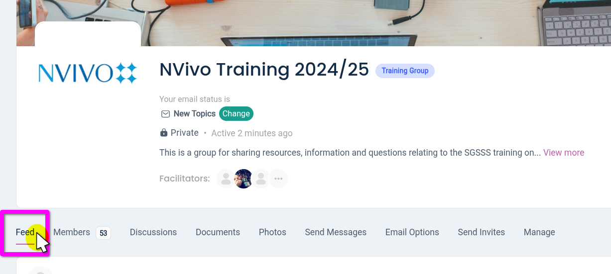
Click ‘Feed’ in the group navigation bar.
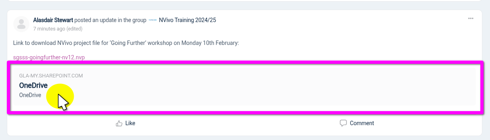
Scroll down the Feed to find my post with the OneDrive link and click it.
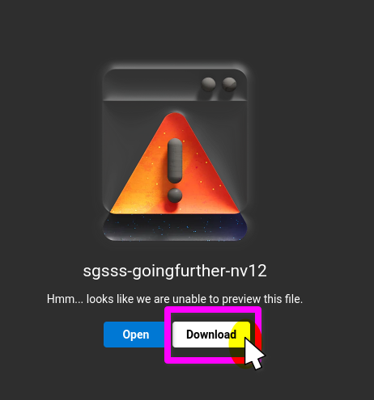
A new tab should open with a button to click to ‘Download’ the file.
In case the download link is not working (my university seems to randomly stop share links from working), there is a zip file containing the NVivo project file on Social as well. Use the next tab for instructions to download and extract the zip file.
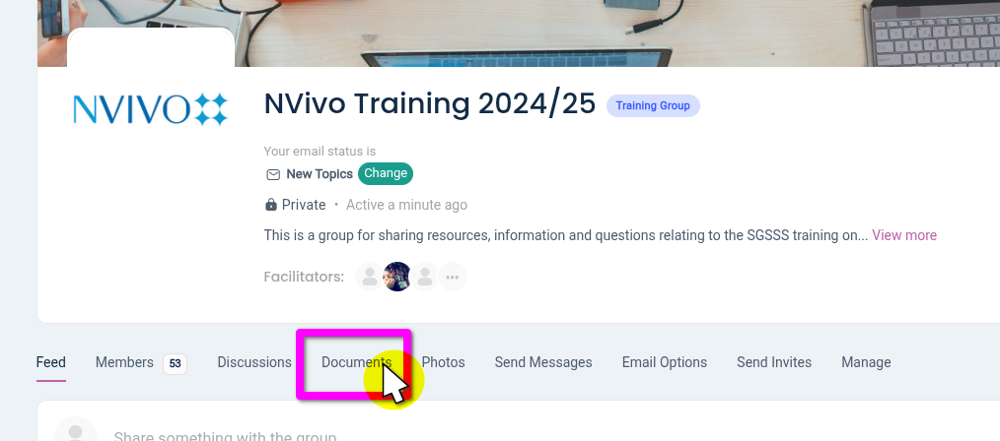
Click ‘Documents’ in the group navigation bar.
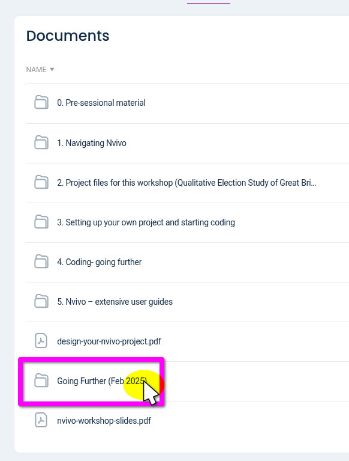
Select the ‘Going Further (Feb 2025)’ folder.
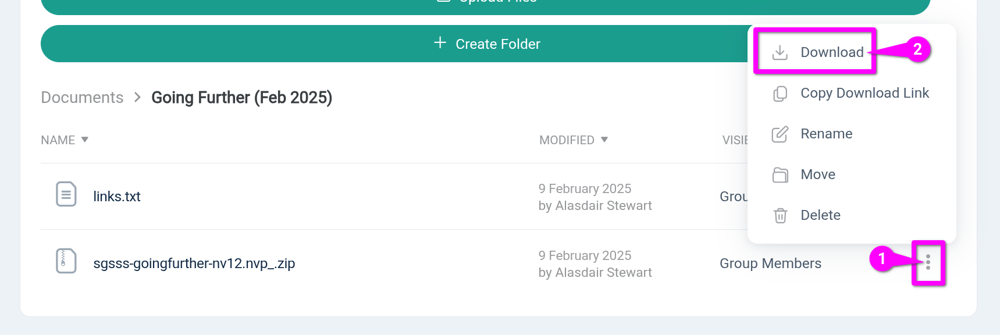
- Click the three dots to open the pop-up menu.
- Click ‘Download’ and choose a suitable location to save the file on your device.
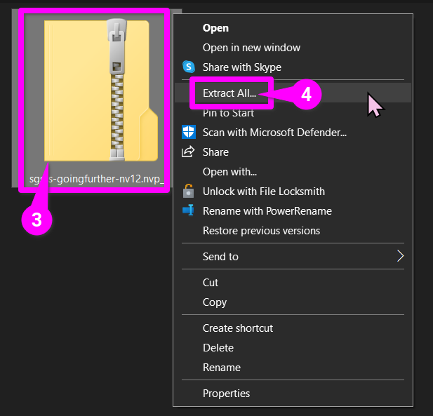
- From the folder you downloaded it to, right-click on the zip file.
- Select ‘Extract All…’
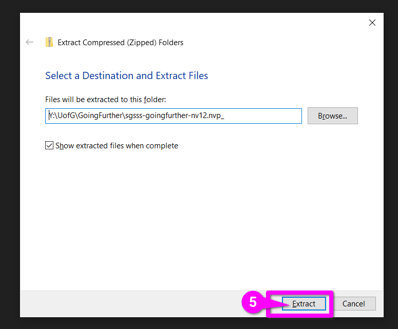
- Click ‘Extract’ from the dialogue window and a new folder will be created containing the NVivo project file.
Converting/Upgrading the Project
NVivo project files are ‘forwards’ but not ‘backwards’ compatible. This means that newer versions of NVivo can open project files created in older versions, but not vice versa.
Due to that, the project file provided was created in NVivo 12, which was the oldest version attendees said they were using in the sign-up survey.
If you are using NVivo 12, you can open the file and directly start working in it.
If you are using a newer version of NVivo or NVivo for MacOS, you will be greeted by a screen asking you to convert/upgrade the file:
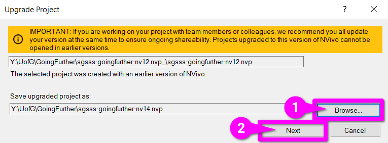
- (Optional) click ‘Browse…’ to choose location to save and rename the project file.
- Click ‘Next’.
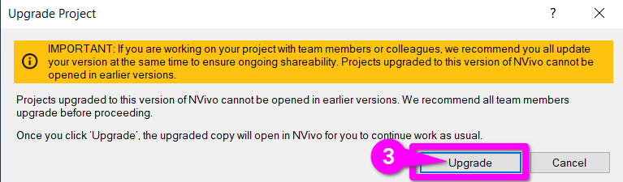
- From the next screen, hit ‘Upgrade’ to confirm and start the upgrade. Once complete NVivo will open the file automatically.
On Windows, there are not any overly significant changes in features from NVivo 12 onwards. The main changes are cosmetic, menu options, and naming conventions.
NVivo for MacOS has always had a different look and menu options. It now has most of the same main features, though a few sub-features remain absent.
We’ll cover some of these differences as we go. The Resources page also has links to the NVivo User Help Pages for different versions.
Project File Overview
As a (very) quick overview of the project file:
Data > Files
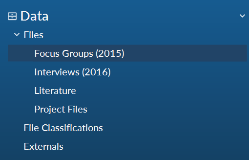
- Focus Groups (2015): Transcripts from three pre-general election focus groups from 2015.
- Interviews (2016): Fourteen telephone interviews on the EU Referendum in 2016.
- Literature: Containing two articles by QESB team members, one on using grounded theory, the other on using focus groups.
- Project Files: With files that contain additional information about the project, the research phases, and participants who took part.
Coding > Codes
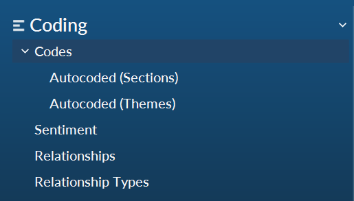
- Codes: Top-level folder with some initial coding created during the Intro to NVivo workshop.
- Autocoded (Sections): Sub-folder with the broad-brush themes that were created auto-coding the Headings within the interview transcripts.
- Autocoded (Themes): Sub-folder with codes created by auto-coding ‘themes’.
We have “autocoded themes” within this document merely to provide a broad range of example codes to work with in the exercises. However, in practice, do not rely on such autocoding instead of creating and coding with your own codes.
Cases > Cases
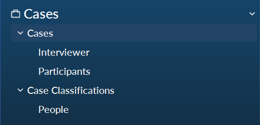
Interviewer: Cases created when ‘autocoding by speaker’ that code transcript sections where an interviewer / moderator from the research team is speaking.
Participants: Cases created when ‘autocoding by speaker’ that code transcript sections where participants are speaking.
Case Classifications: Top-level folder contains the case classifications and their attributes. For this project, there is only one case classification - ‘People’.
- People: Sub-folder with all cases classified as ‘People’, where can see the attributes for specific participants. (Note - the interviewer cases are also classified as people, in many cases you would want to remove from the same classification as participants.)
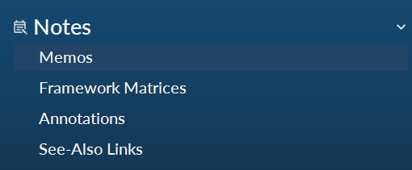
- Memos: NVivo’s built-in note-taking system. Contains a few existing memos with further project info and reflectives on initial analysis.
- Framework Matrices: Create summaries for cases by node. Currently, empty.
- Annotations: Annotations added to files, with couple examples.
- See-Also Links: Use to link content/files to other content/files. Currently, empty.
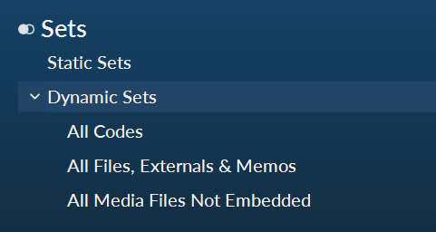
- Static Sets: Manually created collections of project items, of any type. Think of this as a way to group and organise items for specific tasks without changing their primary structure. For example, a code can only exist within a single folder within the “Coding > Codes” section. However, it can be included within an unlimited number of static sets.
- Dynamic Sets: Collections of project items created based on search criteria. As they are criteria based they also auto-update based on any changes in your project. For example, if you had a dynamic set for all codes used to code focus group transcripts, each time you use a new code when coding the focus groups, it will automatically then be included in the dynamic set.
Dynamic Sets are a new name given to what were called ‘search folders’ in NVivo 12. They operate exactly the same, all that is different is the name.
- Query Criteria: Location to store saved queries, saving you from having to manually put them together each time.
- Query Results: Location to store query results. This can be useful for more complex queries that take a long-time to process to save having to re-run it every time – just remember it won’t reflect any changes to your project file. Query results can also be used to create new nodes and cases.
- Coding Matrices: Similar to the above but for the results of a coding matrix. By default manually created coding matrices saved results with be in Query Results, but they can manually moved across. Coding matrices automatically produced, such as when autocoding by theme, are stored here by default.